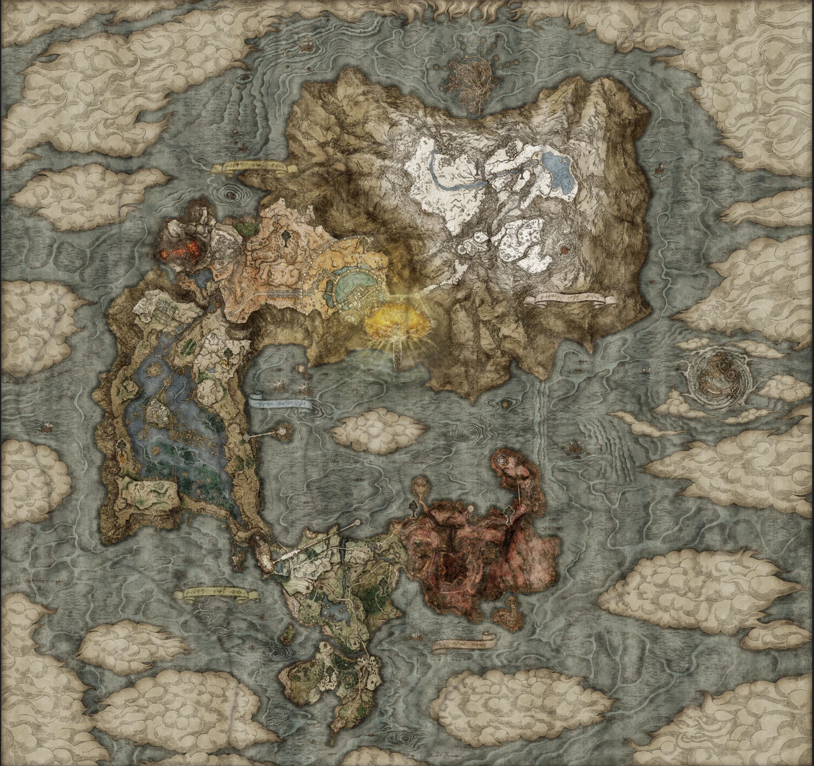

Haz clic en la imagen
Hace mucho tiempo, los guerreros de Lord Godfrey fueron despojados de su Gracia y desterrados de las tierras, pero con la promesa de que, un día, la Gracia sería devuelta después de su muerte y les guiaría a su casa a través de la niebla: Las Tierras entre las Tierras. Uno de ellos, o un descendiente, es profetizado para estar ante el Anillo Elden y convertirse en Señor.
Juega como El Empuje y cruza la niebla para explorar las Tierras entre. Descubre los misterios de esta tierra asolada por la guerra y la magia, viaje a través de su mundo junto al fiel caballo espectral Torrent, y se fortalezca frente a la muerte.
Con una vasta variedad de armas, hechizos, armaduras y artículos, usted decide cómo nivelar una lucha, y al ajustar sus estadísticas y atributos usted decidirá su competencia y medios de supervivencia.
Elden Ring es un oscuro videojuego de fantasía RPG, ganador de más de 300 premios Juego del Año. Un mundo que nació de una colaboración entre George R.R. Martin, autor más vendido mejor conocido por Juego de Tronos, e Hidetaka Miyazaki, creador de la serie de videojuegos Dark Souls. Ha sido construido cariñosamente para jugadores de PlayStation, Xbox y PC.
Mapa de Elden Ring
Experience
Conoce más sobre algunas de las principales áreas y características de *Elden Ring*:
| Área | Descripción | Ubicación |
|---|---|---|
| Limgrave | Es la región de partida que comenzará su viaje como un empañado. | Leer más |
| Liurnia of the Lakes | Es la primera de las zonas que es probable que encuentres viajando a esta región desde Limgrave. | Leer más |
| Caelid | Una región desolada con mucha historia y amenazas. | Leer más |
| Altus Plateau | Es la región directamente al norte de Liurnia, y es conocida por ser la puerta de entrada a la capital de Leyndell. | Leer más |
| Mountaintops of the Giants | Es una de las dos últimas regiones de Elden Ring. | Leer más |
 Sígueme en:
Jesus Emilio Marentes Vejar
Sígueme en:
Jesus Emilio Marentes Vejar
Trailer Elden Ring
Oficinas de FromSoftware
Conoce las oficinas de FromSoftware, creadores de Elden Ring:
Cuestionario de Jugador
Comparte tu experiencia en las Tierras Intermedias para ayudar a otros Sin Luz en su viaje: